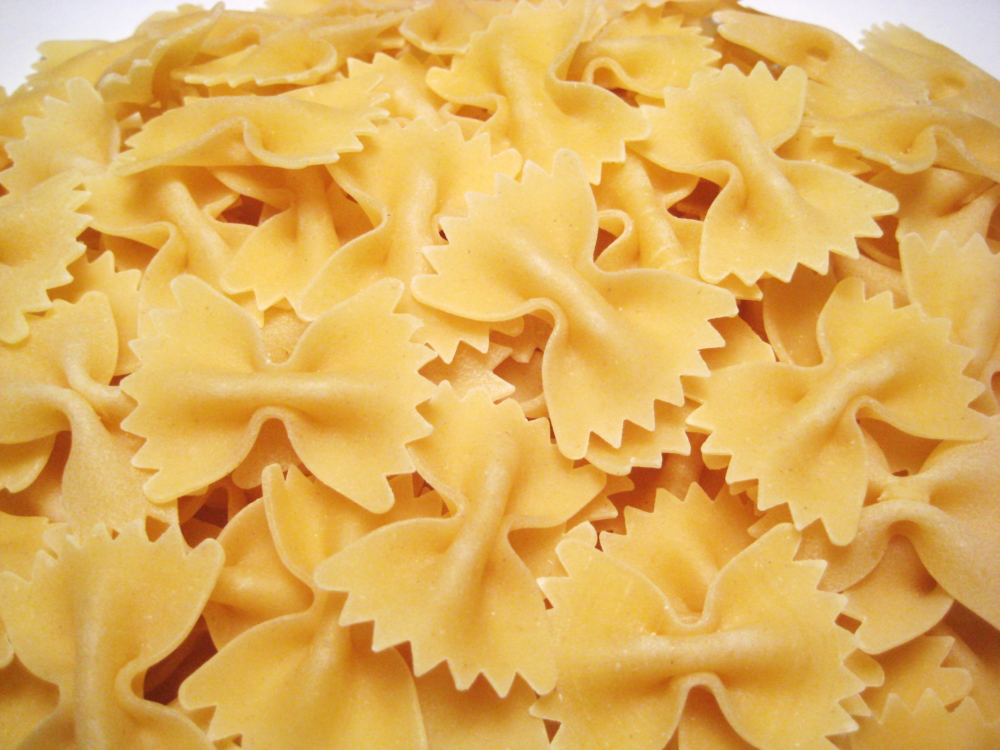

- 
Farfelle is a bowtie shaped pasta. Typically served with cream-based sauces or in salads, use farfalle to make healthy dishes a little more satisfying.
Gemelli is a short, twisty pasta shape that can be translated to "twins" in Italian. Use gemelli in cream and seafood based dishes!

Orecchiette, also known as "pig ear" pasta, is a cup-like pasta which serves as an optimal sauce-carrying vehicle.
One of the newer pasta shapes, radiatori is a short ridged shape. Although more difficult to find, radiatori pairs well with hearty sauces due to it's sauce-capturing ridges.
Also known as pinwheel pasta, rotelle is a circular pasta that pairs perfect with cheese-based sauces. Spice up any mac and cheese recipe by substituting the noodles for rotelle!

With the word "Conch" inside the name, it's no surprise that conchiglie is a shell shaped pasta. Conchiglie comes is various sizes, from mini to extra large. Use the larger styles for stuffed shells!
A grocery-aisle favorite, fusilli is a short spiral shaped pasta. Try making fusili with pesto and arugula for a refreshing dish!
The Italian translation of fagottini is "little bundles", which perfectly describes this stuffed pasta shape. Traditional stuffings include vegetables and ricotta!
-
Gnocchi is a doughy, potato-based pasta that is perfect for any hearty dish. Pro tip, let your gnocchi get crispy in the pan before serving for a beautifully textured bite!